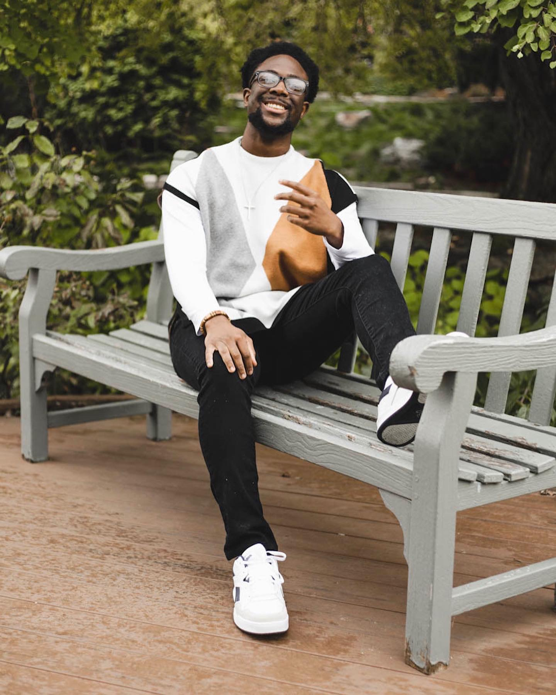
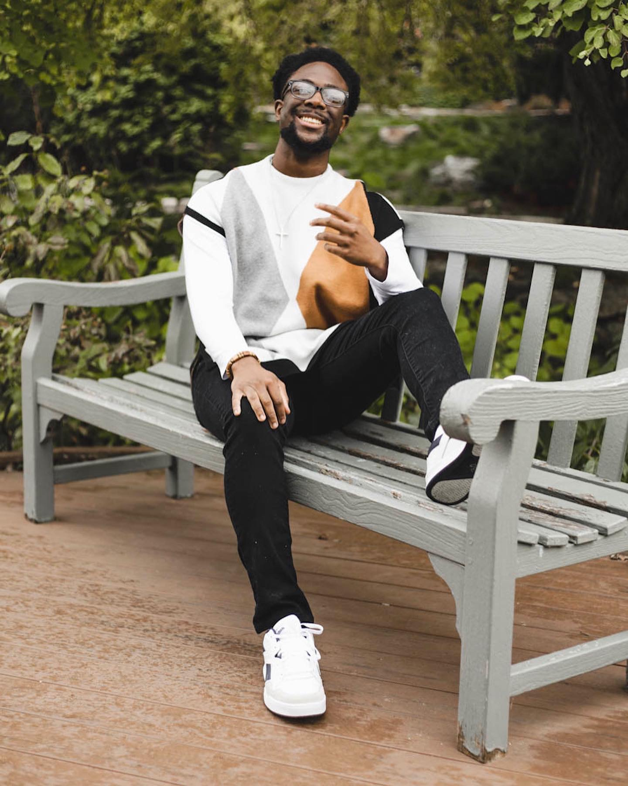

RaeAnna

RaeAnna is currently a sophomore at the University of Wisconsin-Madison studying Legal Studies and Information Science. Originally from Ellsworth, Wisconsin, she enjoys music, excercising, and dance! She is interested in exploring the intersection between tech and law. She took this class because she is interested in exploring how disparities are present in technology and can affect the way we use technology while gaining skills with different computing projects. As a new student in the iSchool, she has felt the pressures of being intimated in classes that she did not feel she belonged in, which has made her curious about the true disparities in the field. She believes this class perfectly blends her sociological academic studies with her technical ones.
 
